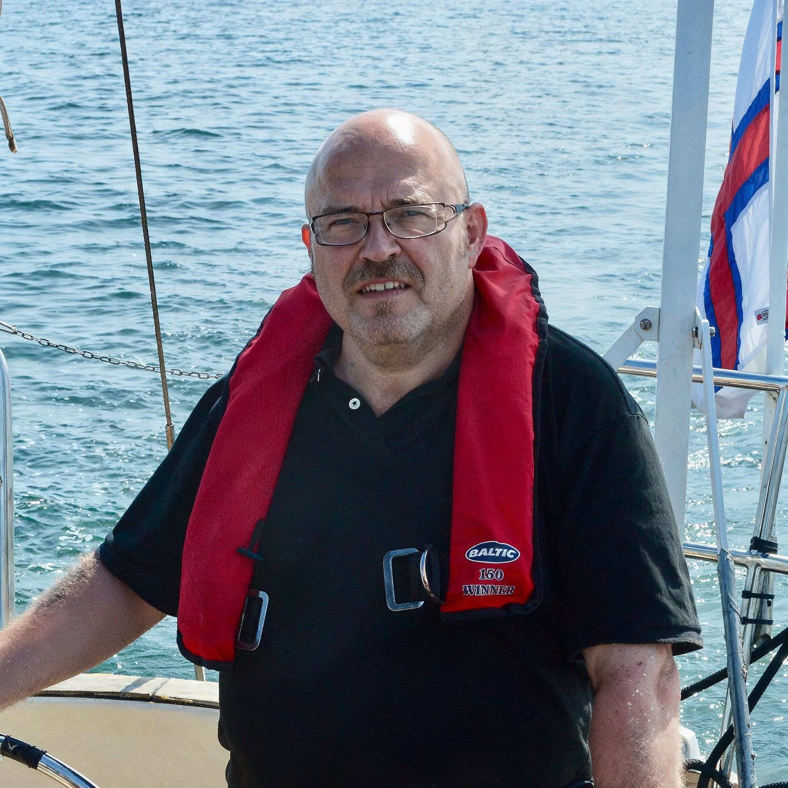

Explore the Faroe Islands on a Traditional Boat Tour with Local Captain Grækaris

Join me, Grækaris Magnussen, on an unforgettable adventure through the pristine waters of the Faroe Islands aboard my traditional Faroese boat, Thomasia. Here’s what you can look forward to on our tours:
Authentic Faroese Experience: Sail on Thomasia, a 25-foot wooden boat inspired by Viking ship designs and crafted by master boat builder Jóan Petur Clementsen. This vessel epitomizes Faroese craftsmanship.
Passionate and Experienced Captain: With 40 years as a journalist and author, I bring the Faroe Islands' rich history and culture to life. Growing up in Hvalvík and navigating these waters since childhood, I offer unique insights and captivating stories.
Stunning Scenic Routes: Experience the breathtaking mountain ranges, serene fjords, and abundant wildlife as we navigate the tranquil waters. Experience the untouched natural beauty and peaceful ambiance of the Faroe Islands.
Personalized Journey: With small group sizes, I ensure a personalized and intimate experience. Engage with me, ask questions, and delve deeper into the unique heritage of the islands.
Comfort and Safety: Relax aboard our well-maintained boat, equipped with all necessary safety features, including life jackets and rescue equipment. Your comfort and safety are paramount.
Exclusive Historical Stops: Discover historic sites like the Áir whaling station. Step ashore to explore well-preserved structures and hear intriguing stories from the past, enriching your understanding of Faroese history.
Hands-On Fishing Experience: Try traditional Faroese fishing with high-quality gear. Catch fish like cod, haddock, and whiting, and take your fresh catch home as a memorable souvenir.
Complimentary Refreshments: Enjoy complimentary tea, coffee, and a sweet treat as we sail through scenic fjords and open waters.
Embark on an adventure that blends exploration with the comfort of a guided tour. Discover the Faroe Islands' natural beauty, rich history, and vibrant culture on a boat trip that promises to be truly unforgettable.
Book your Faroe Islands boat tour today and create memories that will last a lifetime.

Trips to Pick From
Explore our exciting boat trip options below! If you have any special requests or need a customized service, don't hesitate to reach out to us. We'd love to help you create an unforgettable experience!

Book a Trip
To book a trip we would need to agree on a time. Feel free to call me on 59999, this is the fastest way to find a good time.
If you would rather write, feel free to use the form below and I will get back to you as soon as possible.
Frequently Asked Questions
What should I bring on the trip?
Warm clothing, as the weather can be unpredictable. A camera to capture the beautiful scenery. Any personal items you might need. Read more
Is the trip suitable for beginners?
Yes, our captain will provide guidance and support for all skill levels. Read more
What is included in the price?
The price includes the fishing experience, use of all equipment, safety gear, and complimentary refreshments. Read more